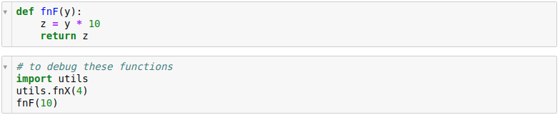
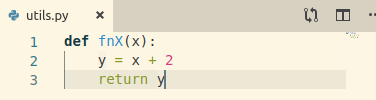
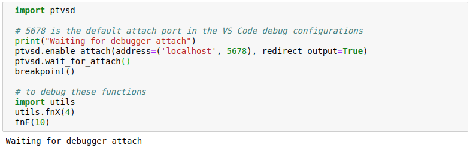
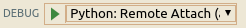
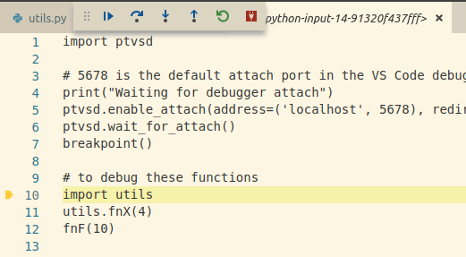

Python Related Tips
Jupyter Notebook
nbextensions
pip install jupyter_nbextensions_configurator jupyter_contrib_nbextensions
jupyter contrib nbextension install --user
jupyter nbextensions_configurator enable --user
data folder: echo $(jupyter --data-dir)/nbextensions/
my snippets.json
Debugging with IDEs
with PyCharm
See here.
with VS Code
- Need ptvsd. See here.
There, check the section on 'breakpoint()' for python versions 3.6 and below.
- In Jupyter Notebook, consider the following cells:

Two functions (in one cell) to debug:
- fnF: defined within the notebook
- fnX: defined in an external file, utils.py

- Insert the attach script within the cell before the functions to debug as below:

- Go to VS Code, click the "Debug" button
on the left, and select "Python: Remote Attach", and press the green triangle to start debugging.

- The Jupyter cell will appear in VS Code as below:

and start debugging using the debugging buttons.
- To stop, press the disconnect (red) button.